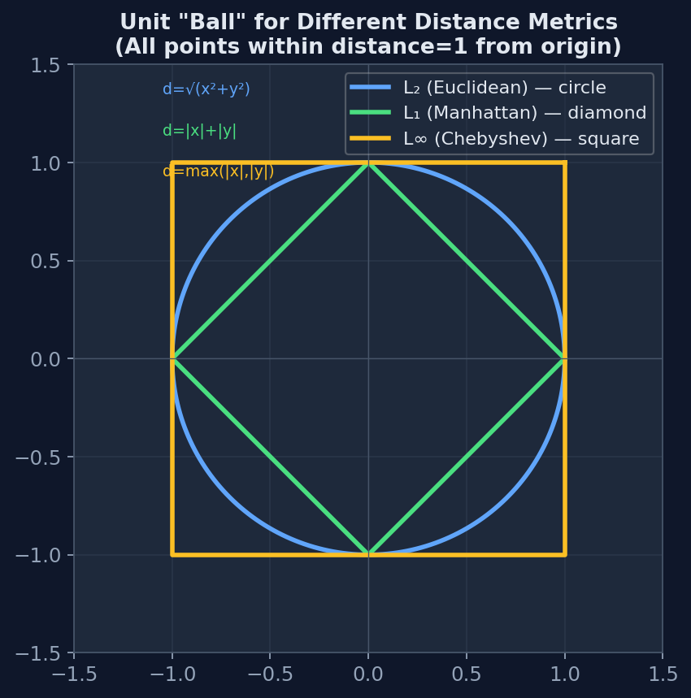
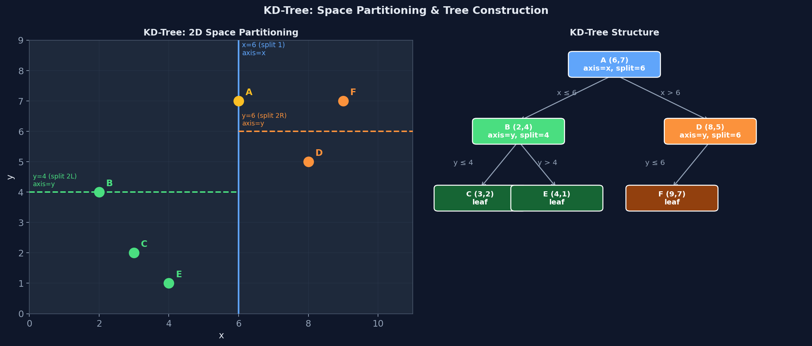
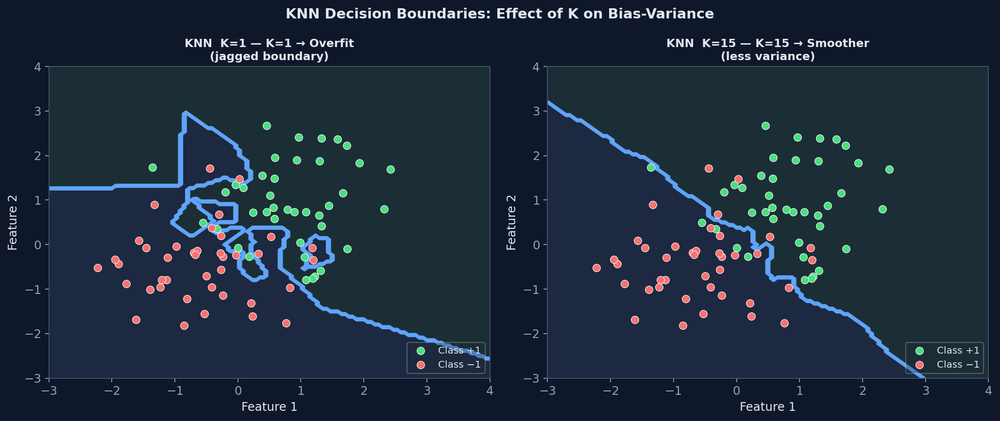
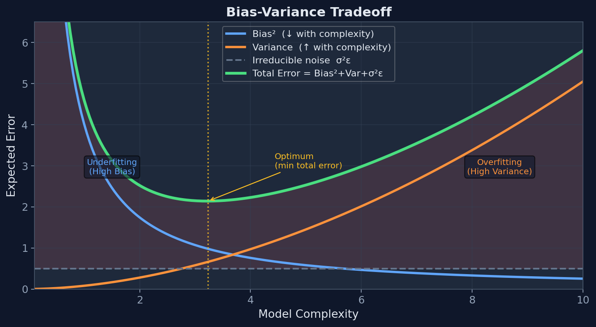

K-Nearest Neighbor Classifier (KNN)
Phân loại dựa trên k điểm dữ liệu huấn luyện gần nhất — thuật toán học lười (lazy learning).
KNN không xây dựng mô hình khi huấn luyện — lưu toàn bộ tập dữ liệu. Khi có điểm mới, tìm k hàng xóm gần nhất và bỏ phiếu đa số.
Khoảng cách Euclidean (L2-norm) — thường dùng nhất
Khoảng cách Manhattan (L1-norm)
Minkowski (tổng quát)
p=1 → Manhattan; p=2 → Euclidean.

Hình 4 — "Unit ball" (tập hợp mọi điểm cách gốc đúng 1 đơn vị) cho L₁ (diamond), L₂ (circle), L∞ (square). Hình dạng quyết định cách KNN "nhìn" láng giềng: L₁ ưu tiên theo trục, L₂ đẳng hướng, L∞ ưu tiên chiều xa nhất.
Min-Max Normalization → ánh xạ về [0, 1]
Ánh xạ về đoạn tùy ý [new_min, new_max]:
Z-score Normalization → phân phối chuẩn (mean=0, std=1)
Thay vì bỏ phiếu đều nhau, mỗi hàng xóm được gán trọng số tỷ lệ nghịch với khoảng cách:
MDC — Minimum Distance Classifier
Thay mỗi lớp bằng 1 vector trung bình (prototype). Phân loại theo prototype gần nhất. Giảm từ N điểm xuống C điểm (C = số lớp).
CNN — Condensed Nearest Neighbor
Mỗi lần dự đoán một điểm truy vấn, KNN phải tính khoảng cách đến tất cả N điểm huấn luyện. Một phép tính khoảng cách Euclidean trong D chiều cần D phép trừ, D phép bình phương, và 1 căn bậc hai → chi phí \(\mathcal{O}(D)\) mỗi cặp → tổng cộng \(\mathcal{O}(N \cdot D)\) mỗi query.
Tìm trạm xăng gần nhất trong thành phố: cách Brute-force tương đương lái xe đến từng trạm xăng, đo khoảng cách, rồi chọn ngắn nhất. Rõ ràng phi thực tế. KD-Tree giống như xem bản đồ: bạn biết ngay "phía Bắc có khu vực xa lắm, bỏ qua hẳn" — loại trừ cả vùng không gian mà không cần kiểm tra từng điểm.
Gọi \(r\) là khoảng cách đến ứng viên tốt nhất đã tìm thấy. Nếu khoảng cách từ query đến toàn bộ một vùng không gian đã lớn hơn \(r\), thì không có điểm nào trong vùng đó có thể là kết quả tốt hơn → bỏ qua toàn bộ vùng, không cần kiểm tra từng điểm. Đây là nguyên lý hoạt động của mọi space-partitioning tree.
Pha xây dựng (Build): chia không gian bằng siêu phẳng axis-aligned

Hình 1 — Trái: Không gian 2D bị chia bởi KD-Tree. Đường thẳng xanh (x=6): split cấp 1 theo trục x. Đường ngang (y=4, y=6): split cấp 2 theo trục y. Phải: Cấu trúc cây tương ứng — mỗi node là một điểm dữ liệu, leaf không có con.
Kết quả: không gian bị chia nhỏ thành các hình chữ nhật (hyperrectangles). Mỗi leaf node chứa một tập nhỏ điểm.
Pha truy vấn (Query): đi xuống + backtrack với điều kiện cắt tỉa
Mọi điểm trong nhánh bị bỏ qua đều nằm trong nửa không gian cách query ít nhất \(d(q, \text{hyperplane})\). Nếu khoảng cách này đã > \(r\), tất cả chúng đều xa hơn ứng viên hiện tại → không thể cải thiện kết quả → bỏ qua an toàn.
Khi nào KD-Tree KHÔNG hiệu quả? — Curse of Dimensionality
Khi D tăng, hypersphere bán kính \(r\) quanh query point bắt đầu cắt qua tất cả các hyperrectangle → điều kiện cắt tỉa luôn thất bại → thuật toán phải visit gần như mọi node → chi phí tiến gần về \(\mathcal{O}(N \cdot D)\).
Cơ chế: trong D chiều, để đảm bảo hypersphere KHÔNG cắt một hyperrectangle, cần r đủ nhỏ so với kích thước hyperrectangle. Nhưng volume hyperrectangle co lại theo hàm mũ \(2^{-D}\) (mỗi chiều bị chia đôi) trong khi volume hypersphere co chậm hơn → hypersphere "tràn ra" khắp nơi.
D ≤ 20: dùng KD-Tree. 20 < D ≤ 100: dùng Ball-Tree. D > 100: Brute-force với tối ưu BLAS thường nhanh ngang ngửa, vì overhead backtrack của tree không còn bù được.
Ý tưởng và điều kiện cắt tỉa của Ball-Tree
Thay vì chia bằng siêu phẳng axis-aligned (KD-Tree), Ball-Tree bao mỗi tập con điểm bằng hình cầu nhỏ nhất (minimal enclosing ball) với tâm \(c\) và bán kính \(\rho\).
Tại sao Ball-Tree tốt hơn KD-Tree ở D cao? Hình cầu là bao lồi "chặt" hơn hình chữ nhật đối với cụm điểm co cụm (clustered data). Hyperrectangle của KD-Tree thường rất rộng (có "góc thừa"), dẫn đến hypersphere query dễ cắt vào → ít cắt tỉa hơn. Hình cầu ôm sát cụm dữ liệu → điều kiện cắt tỉa mạnh hơn.
KD-Tree
- Biên phân hoạch: siêu phẳng axis-aligned
- Tốt khi D thấp (< 20)
- Build nhanh hơn
- Dữ liệu phân bố đều theo trục
Ball-Tree
- Biên phân hoạch: hình cầu
- Tốt hơn khi D vừa (20–100)
- Build chậm hơn nhưng query hiệu quả hơn
- Dữ liệu co cụm theo bất kỳ hướng nào
K=1: Lấy nét hoàn toàn sắc nét — thấy từng hạt nhiễu, từng điểm ngoại lệ. K=N: Blur hoàn toàn — mất toàn bộ chi tiết, chỉ thấy "màu nền" (lớp đa số). K tối ưu: Đủ mịn để triệt tiêu nhiễu, đủ sắc để giữ signal thật.
Tăng K = tăng "bán kính vùng ảnh hưởng" → biên quyết định mượt dần, "đảo" nhỏ bị nuốt vào vùng lớn hơn.
Lập luận: Với K=1, để dự đoán điểm huấn luyện \(x_i\), ta tìm nearest neighbor của \(x_i\) trong tập huấn luyện. Khoảng cách \(d(x_i, x_i) = 0\) — chính nó luôn là điểm gần nhất. Vậy neighbor duy nhất là \(x_i\) với nhãn \(y_i\) → predict \(y_i\) → luôn đúng. Kết quả: Training Error = 0 cho MỌI tập dữ liệu khi K=1.
Hệ quả quan trọng: Training Error = 0 không có nghĩa là mô hình tốt. Đây là dấu hiệu cổ điển của overfitting — mô hình "thuộc lòng" training data kể cả nhiễu.
Decision boundary tại K=1: Biên quyết định là sơ đồ Voronoi (Voronoi diagram / Thiessen polygons). Mỗi vùng Voronoi của điểm \(x_i\) là tập tất cả điểm \(q\) thỏa \(d(q, x_i) < d(q, x_j) \;\forall j \neq i\). Biên giữa hai vùng là đường thẳng vuông góc phân giác nối \(x_i\) và \(x_j\). Với dữ liệu nhiều điểm: biên rất gấp khúc, phức tạp, "ôm" từng điểm.
Lập luận: Với K=N, bất kỳ query \(q\) nào — dù nằm ở đâu trong không gian feature — đều lấy tất cả N điểm huấn luyện làm hàng xóm. Vote: lớp A nhận \(n_A\) phiếu, lớp B nhận \(n_B\) phiếu. Nếu \(n_A > n_B\): luôn predict A, bất kể \(q\) đứng ở đâu. Vị trí của \(q\) hoàn toàn không ảnh hưởng đến kết quả.
Kết luận: Biên quyết định biến mất — toàn bộ không gian thuộc về một lớp duy nhất.
Ví dụ cụ thể: Tập 100 điểm — 60 Class A (majority), 40 Class B (minority). Với K=100: mọi điểm được predict là A. 60 điểm A → đúng. 40 điểm B → sai. Training Error = 40/100 = 40%. Đây là con số lớn, nhưng cũng chính là "baseline" của một classifier ngây thơ (majority class classifier).
Nhiều người nhầm Training Error tại K=N = 0 (vì nghĩ "dùng toàn bộ data nên predict tốt"). Sai. K=N predict đúng đến mức bằng phẳng (flat prediction), và vì tập huấn luyện có cả lớp thiểu số, Training Error = tỷ lệ lớp thiểu số ≠ 0.

Hình 2 — Biên quyết định KNN với K=1 và K=15 trên cùng dataset. K=1: biên cực kỳ phức tạp, mỗi điểm tạo "đảo" riêng → overfit noise. K=15: biên mượt mà hơn, tổng quát hóa tốt hơn. Đường xanh = decision boundary.
| Giá trị K | Biên quyết định | Training Error | Bias | Variance | Hiện tượng |
|---|---|---|---|---|---|
| K = 1 | Voronoi — cực kỳ phức tạp | 0% (tự predict chính mình) | Thấp | Cao | Overfit |
| K nhỏ (3–7) | Phức tạp, "đảo" nhỏ dần | Thấp | Thấp | Vừa | Gần tối ưu |
| K ≈ √N | Mượt, tổng quát | Thấp | Vừa | Thấp | Thường tối ưu |
| K → N | Đơn giản dần, mờ dần | Tăng dần | Cao dần | Giảm dần | Underfit tăng |
| K = N | Biến mất — 1 lớp duy nhất | = minority% | Cực đại | ~0 | Underfit cực đại |
Đường cong lỗi theo K — Đọc hiểu từng vùng

Hình 3 — Đường cong lỗi theo K. K=1: Train Error=0, Test Error cao (variance cao). K=N: cả hai hội tụ về minority% (high bias). Điểm tối ưu ở "elbow" — K ≈ √N trong thực hành.
- Training Error tăng đơn điệu khi K tăng — do K lớn hơn đưa vào hàng xóm của các lớp khác → một số training point bị classify sai.
- Test Error hình chữ U — K nhỏ: variance cao; K lớn: bias cao. Điểm tối ưu ở "elbow" — nơi variance và bias cân bằng.
- Tại K=N: Train Error = Test Error ≈ minority% — cả hai hội tụ về mức lỗi của "naive baseline" (luôn đoán majority class).
| ID | X1 | X2 | Churn |
|---|---|---|---|
| TR01 | 3 | 10 | Yes (+) |
| TR03 | 5 | 5 | Yes (+) |
| TR04 | 1 | 40 | No (−) |
| TR07 | 0 | 30 | No (−) |
| TR08 | 6 | 3 | Yes (+) |
Query: TS01 = (X1=4, X2=12). Dự đoán với K=3.
Bước 1: Tính khoảng cách Euclidean từ TS01 đến từng điểm
| Điểm | Khoảng cách | Nhãn | Trong top-3? |
|---|---|---|---|
| TR01 | 2.24 | Yes | ✓ #1 |
| TR03 | 7.07 | Yes | ✓ #2 |
| TR08 | 9.22 | Yes | ✓ #3 |
| TR07 | 18.44 | No | ✗ |
| TR04 | 28.16 | No | ✗ |
Bước 2: Majority Vote và Weighted Vote
Hard Voting (K=3): Top-3 = {TR01(Yes), TR03(Yes), TR08(Yes)} → 3 Yes, 0 No → Predict Yes ✓
Weighted Voting (nghịch đảo khoảng cách bình phương):
→ Weighted vote cũng cho Yes. TR01 đóng góp nhiều nhất (gần nhất).
ServiceUsage (X2) có range 3-60, SupportTickets (X1) có range 0-6. Khoảng cách bị chi phối bởi X2 (range lớn hơn). Ví dụ: d(TS01,TR04)=√793 ≈ 28.16 bị X2 (12-40=28) chi phối.
Sau Min-Max normalization về [0,1]: các đặc trưng đóng góp công bằng → phân loại chính xác hơn.